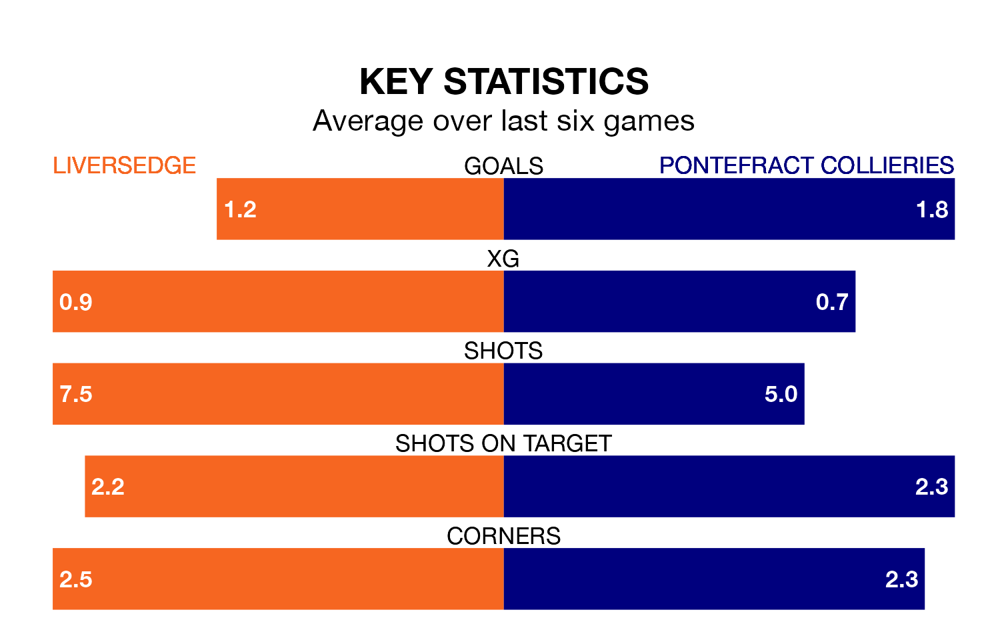

Liversedge host Pontefract Collieries on Saturday in the Northern Premier League Division One East.
In their last league match, on January 20, Liversedge drew with Stockton Town 0-0 away.
Pontefract Collieries also drew, 3-3 away at Hebburn Town on January 13.
With 40 goals in 20 games so far this season, Pontefract Collieries are the league's third-highest scorers with 2.0 goals per game. And they are conceding fewer than average, letting in 27 goals at a rate of 1.4 per game.
Liversedge, meanwhile, are below average scorers, with 1.5 goals per game, compared to a league average of 1.6. They have conceded 1.3 goals per game.
The hosts are in disappointing form in the Northern Premier League Division One East, with one win and two draws from their last six games.
With two wins and two draws over that period, the away side's form is better – they have taken eight points from 18, compared to Liversedge's five.
Liversedge are 15th in the table after 21 games, of which they have won eight and drawn three, earning 27 points.
Pontefract Collieries are eight places ahead of the home team in seventh, with 10 wins and five draws putting them on 35 points.
In the last three years, Liversedge and Pontefract Collieries have played each other on three occasions. They won one each, and they drew once.
Their last meeting was on November 28, when Pontefract Collieries won 2-1 at home.
Updated: 09:07 (UTC), 24/01/24